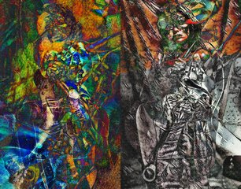

by Athena Novo · Async Art Master #3203 · day/night · time rule: UTC
Updates twice a day to reflect day / night cycles.

Day 06:00–18:59 · Night 19:00–05:59 (UTC)
The full-size files live on IPFS; each is linked on three public gateways, in the order to try them (gateway.pinata.cloud, ipfs.io, dweb.link). Every line says what our own check found: 3 we keep this file pinned, 1 our own copy, pinned here and verified on upload.
QmYRsVUjeZtTbY… gateway.pinata.cloud · ipfs.io · dweb.link — we keep this file pinned, checked 2026-09-23 09:13QmV9h8HqjWGXx4… gateway.pinata.cloud · ipfs.io · dweb.link — we keep this file pinned, checked 2026-09-23 09:13bafybeidavcemu… gateway.pinata.cloud · ipfs.io · dweb.link — our own copy, pinned here and verified on upload, checked 2026-09-22QmesfkZ4LeBp2V… gateway.pinata.cloud · ipfs.io · dweb.link — we keep this file pinned, checked 2026-09-23 09:13QmYRsVUjeZtTbY… gateway.pinata.cloud · ipfs.io · dweb.link — we keep this file pinned, checked 2026-09-23 09:13QmYRsVUjeZtTbY… gateway.pinata.cloud · ipfs.io · dweb.link — we keep this file pinned, checked 2026-09-23 09:13QmV9h8HqjWGXx4… gateway.pinata.cloud · ipfs.io · dweb.link — we keep this file pinned, checked 2026-09-23 09:13Part of the "If I" series.. If I were that Kinky by Athena Novo on Async Art This artwork consists of couple of underlying artworks that automatically change depending on the time of the day. Visit at Async Art's website to experiment with it. View with Async Art's app to experience it yourself.
async.art · OpenSea · Etherscan
Generated archive pages. Content identifiers point to the public IPFS network.